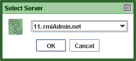
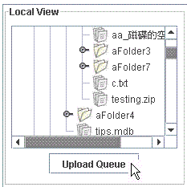

For example, when you want to upload a file/folder from local machine to remote machines, you could simply do this in just one interface of RMIAdmin, regardless of the target computer platform, moreover FTP Client/Server is no longer required since RMIAdmin is capable to handle transfer of data across network.
For example when you want to transfer files from one Windows computer to another Windows computer, you must either use FTP or map the remote network drives (which must be shared initially).
The same applied to unix-like computer, you have to start the NFS / FTP / Samba service before you could really connect with these remote file system, which is therefore raising a great deal management issue such as specific settings, as well as security concern. While RMIAdmin keeps you away from this burden by means of the RMIServer program in which configurations is guaranteed to be consistent even across various computer platforms.
The usage of RMIAdmin File Browser is fairly easy and much alike to Windows Explorer.
-
Select "Tools" -> "File Browser", this will brings you to the File Browser Workspace.
- Choose your target server to operate by clicking the "Select Server" button.
-
All the managed server will be loaded into a list box, simply choose your preferred
server, and click "OK" to continue.
 -
As shown above, the File Transfer View is divided into 2 views:
- the Local File View on the left side
- the Remote File View on the right side
-
Where you could actually perform operations listed below across these 2
different views.
- Instant Upload (Ascii & Binary files)
- Instant Download (Ascii & Binary files)
- Delay Upload (Ascii & Binary files)
- Delay Download (Ascii & Binary files)
- Copy and Paste
- Cut and Paste
- Delete
- Create
- Rename
- Edit
- View Property
Instant Upload
- Select any folder or file from the Local File View.
- Goto the Remote File View and select the target location (must be a folder).
-
Right click on it and select "Upload" > "Instant Upload", then select the transfer type.

-
A progress monitor will then be shown, indicating the amount of completion,
simply wait until completion.
* Note that you can only select one object from the Local File View each time, thus if you want to transfer large amount of files to same location, it is suggested to use "Delay Upload".
Instant Download
- Select any folder or file from the Remote File View.
- Goto the Local File View and select the target location (must be a folder).
-
Right click on it and select "Download" > "Instant Download", then select the transfer type.
-
A progress monitor will then be shown, indicating the amount of completion,
simply wait until completion.
* Note that you can may select more than one object from the Remote File View each time, but if you want to transfer large amount of files to same location, it is suggested to use "Delay Download".
Delay Upload
- Select any folder or file from the Local File View.
- Goto the Remote File View and select the target location (must be a folder).
- Right click on it and select "Upload" > "Delay Upload", then select the transfer type.
- You may then continue to select other files or folders and queue all the transfer activities.
-
When the queue is settled and is ready to be uploaded, click the "Upload Queue" button.
 -
This will open up the "Upload Queue Window".
Click "Start Upload" to proceed the transfer.
Click "Refresh" to reload the queue.
Click "Cancel All" to remove all the objects from the queue.
If you want to remove a specfic object from the queue, select it and click "Cancel".
* Note that you can only select one object from the Local File View each time.
Delay Download
- Select any folder or file from the Remote File View.
- Goto the Local File View and select the target location (must be a folder).
- Right click on it and select "Download" > "Instant Download", then select the transfer type.
- You may then continue to select other files or folders and queue all the transfer activities.
-
When the queue is settled and is ready to be downloaded, click the "Download Queue" button.
-
This will open up the "Download Queue Window".
Click "Start Download" to proceed the transfer.
Click "Refresh" to reload the queue.
Click "Cancel All" to remove all the objects from the queue.
If you want to remove a specfic object from the queue, select it and click "Cancel".
* Note that you can only select one object from the Local File View each time.
Copy and Paste
- Click File Browser Workspace- Copy and Paste for details.
Cut and Paste
- Click File Browser Workspace- Cut and Paste for details.
Delete
- Click File Browser Workspace- Delete for details.
Create
- Click File Browser Workspace- Create for details.
Rename
- Click File Browser Workspace- Rename for details.
Refresh
- Click File Browser Workspace- Refresh for details.
Edit File
- Click File Browser Workspace- Edit File for details.
Related Topics:
|
|
Copyright 2005 © RMIAdmin. All rights reserved. |